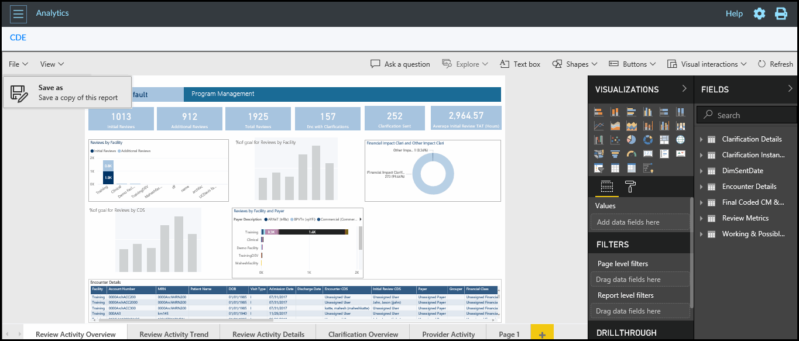

Creating Custom Reports
To create a custom report, follow the below steps:
-
Click File and select Save as.
This option is not available if you login as a CDS Manager.
Figure 1. Save a Copy of Report 
The Report will be saved in the User Defined section on the main page.Figure 2. User Defined Screen  Note:
Note:- You can also search the report using the search box.
- By default, the reports are sorted in ascending order (alphabetical order). Click on the reports header to sort the report in descending order.
- You can modify the custom created report and save it as a new report or overwrite on the same report.
- You can select the filters/criteria on a report and save it as a custom report to avoid selecting the filters/criteria again.